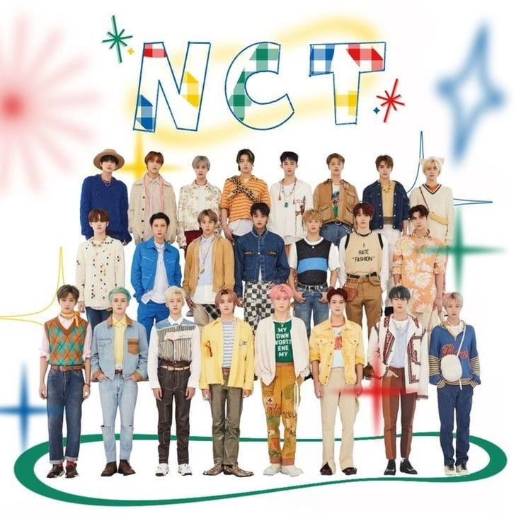
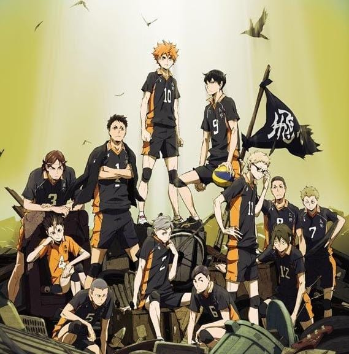

Febriyanti Juhaini. Lahir di Tangerang, 22 Februari 2002. Anak pertama dari dua bersaudara. Tempat tinggal di Jakarta Barat. Jurusan Teknik Informatika di Universitas Esa Unggul. Favorit genre musik Kpop, Khh/Krnb.

My Favorite Boygroup
NCT, beranggotakan 26 member yang akan selalu bertambah dan terbagi menjadi beberapa sub-unit. Ada NCT 127, NCT Dream, Wayv, dan NCT U. Sub-unit mereka dibagi berdasarkan genre musik.

My Favorite Anime
Haikyuu. Anime bergenre olahraga volly, menceritakan tentang seorang anak bernama Hinata Shoyo yang termotivasi untuk menjadi ACE pada tim volly SMA Karasuno dan perjalanan tim mereka hingga menang pada kejuaraan Nasional.